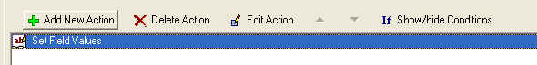

Using Action Scripting
You have covered a lot of ground in this introduction to Xbasic. You have learned about different Xbasic commands, objects, variables, and tools and how to use them in creating Xbasic scripts and functions. And while you have learned a lot about Xbasic, there are many areas of using Xbasic that still remain for you to discover.
One of the best ways to learn more about Xbasic is to use Alpha Fives Action Scripting. When you use Action Scripting Alpha Five actually writes Xbasic code for you.
Action Scripting is a tool that can be used when you are creating any script (whether a global script or an event script). When you build a script using Action Scripting you do not type Xbasic commands into an editor. Instead you pick from a menu of dozens of categorized actions that you wish to have your script perform.
When you select an action that you want performed, you then answer a series of questions and prompts for information where you define exactly how you want that action to behave. The Action Scripting tool then creates the Xbasic commands that will perform your desired action. However, a script created using Action Scripting displays symbols and descriptions that represent the actions. Each row of an Action Script is a separate action. Actions in scripts can be edited and modified or deleted altogether. You can string together many actions in one script and change the order that the actions are executed in.
You can also mix actions with Xbasic code. And you can convert an Action script completely into the underlying Xbasic code.
Action Scripting can be used to learn Xbasic. By creating a script first in Action Scripting, you focus on what you want the script to do, rather than how it does it. You can then convert the script from Actions to Xbasic commands and expand or modify the script directly using Xbasic.
When you choose to create a new script using Action Scripting you see the following display in the Code Editor : Picture
{kind=link}
Figure 78
|
Use these commands to insert |
You do not enter Xbasic commands directly n this window. You select from the command menu at the top edge of the window. When you press Add New Action this pop-up window appears:
Figure 79
|
The Action list show all the categories of available actions. When you select a category in the left box, the available actions for that category appear in the right box. This window shows all the actions listed alphabetically. After you highlight the action you wish to include in the script you click OK at the bottom of the window. Alpha Five then asks you the details of how that action should work. and includes an Action icon in the script window. |
If you select the "Set Field Values" action from the "Fields" category as shown here:

Figure 80
Alpha Five displays a pop-up window where you define the characteristics of this action as shown to the right in Figure 81.
Figure 81
You tell Alpha Five where the field is (on which object), which field to set, and how the value should be set. When you have finished telling Alpha Five how this action should be performed, Alpha Five adds an action icon in the script as shown in figure 82.

Figure 82
|
This script now has a single action specified. To see or change what field this action acts on, you can use the Edit Action command. |
If you right-click on the highlighted Action item, you can select View Xbasic from the drop-down menu as shown in Figure 83:
Figure 83
This menu choice lets you see the Xbasic code that Alpha Five writes behind the scenes in order to perform the Action you specified through the action scripting menu.
When you select View Xbasic, Alpha Five displays an Xbasic Code where you can view the code for a single action or all the actions you have defined in the script.
In Figure 84 is the pop-up window displaying the Xbasic code that underlies the Set Field Value action defined in Figure 82.
Figure 84
You can see that Alpha Five generates more Xbasic commands for an action than you might have expected to perform the requested task. In creating Xbasic scripts via Action Scripting, Alpha Five includes comments and a lot of error checking code. The code generated for this action makes sure that the window that contains the field you want the action to change actually exists before it tries to change the field.
By examining the code that Alpha Five writes to perform Action Scripting actions, you can pick up programming skills and techniques that will improve the efficiency and reliability of your code. Action scripting can also help speed up your work. When you have a script with multiple actions, you can quickly specify tasks you want accomplished through Action Scripting.
Then you can view the Xbasic code for all of the actions in one screen. (via the All Actions tab in the Xbasic Code window). You can copy the code to the clipboard and continue working on the script using the Xbasic Code Editor and editing the Xbasic code directly if you wish.
You have reached the end of Learning Xbasic.
Next